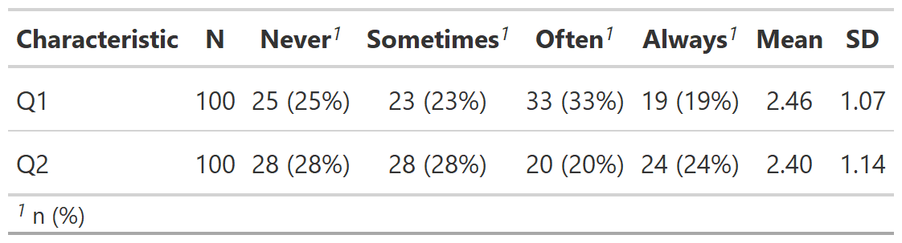

![[Experimental]](figures/lifecycle-experimental.svg) Creates a summary of Likert scales following the gtsummary structure
Creates a summary of Likert scales following the gtsummary structure
tbl_likert(
data,
label = NULL,
statistic = NULL,
digits = NULL,
include = everything(),
sort = c("default", "ascending", "descending")
)
# S3 method for tbl_likert
add_n(x, ...)Arguments
- data
A data frame
- label
List of formulas specifying variables labels, e.g.
list(age ~ "Age", stage ~ "Path T Stage"). If a variable's label is not specified here, the label attribute (attr(data$age, "label")) is used. If attribute label isNULL, the variable name will be used.- statistic
List of formulas specifying types of summary statistics to display for each variable. The default is
list(all_continuous() ~ "{median} ({p25}, {p75})", all_categorical() ~ "{n} ({p}%)"). See below for details.- digits
List of formulas specifying the number of decimal places to round summary statistics. If not specified,
tbl_summaryguesses an appropriate number of decimals to round statistics. When multiple statistics are displayed for a single variable, supply a vector rather than an integer. For example, if the statistic being calculated is"{mean} ({sd})"and you want the mean rounded to 1 decimal place, and the SD to 2 usedigits = list(age ~ c(1, 2)). User may also pass a styling function:digits = age ~ style_sigfig- include
variables to include in the summary table. Default is
everything()- sort
Sort table based on mean scores? Must be one of
c("default", "ascending", "descending")- x
Table of class 'tbl_likert'
- ...
not used
Example Output
Example 1

See also
Other gtsummary-related functions:
add_inline_forest_plot(),
add_sparkline(),
as_ggplot(),
bold_italicize_group_labels(),
style_tbl_compact(),
theme_gtsummary_msk()